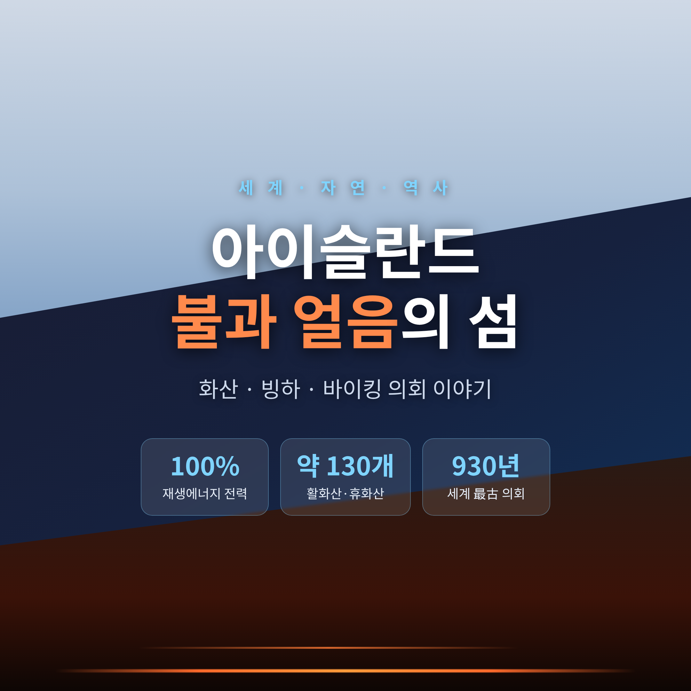
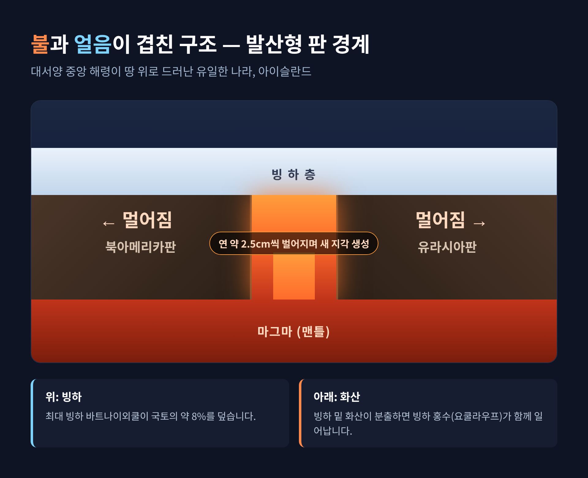
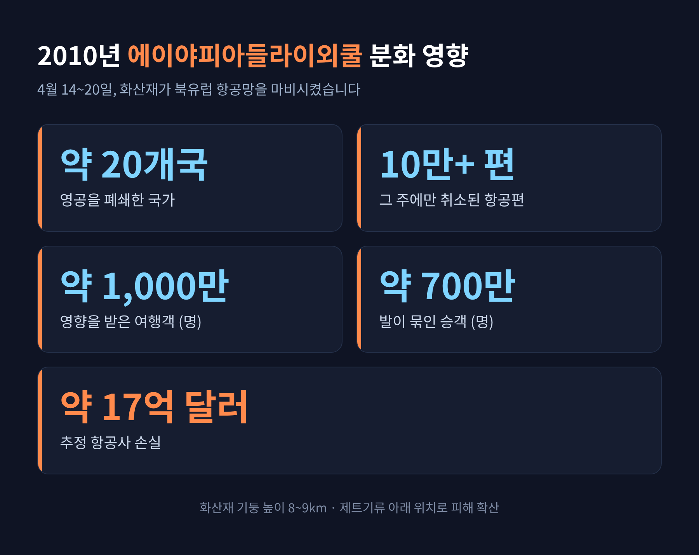
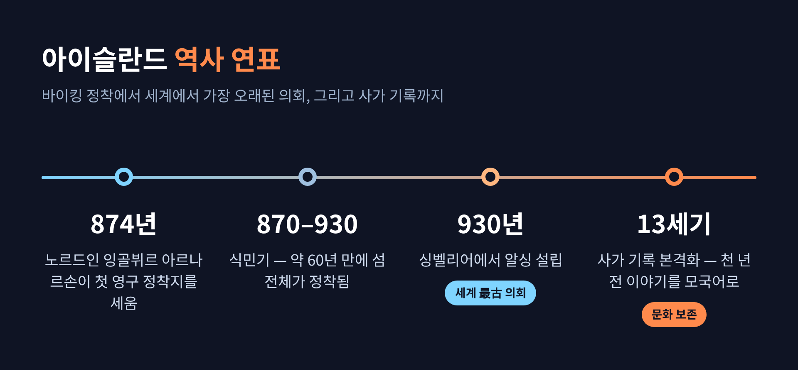

[세계] 아이슬란드, 불과 얼음이 함께 사는 섬 — 화산·빙하·바이킹 의회 이야기

오늘은 아이슬란드에 대해 이야기해 보려 합니다.
이 섬은 한마디로 "불과 얼음이 한자리에 사는 땅"입니다.
지질, 화산, 바이킹의 역사, 그리고 거의 100%에 가까운 청정전력까지 — 왜 이런 모습이 가능한지 차근차근 정리하겠습니다.
먼저 세 줄로 요약하면 이렇습니다.
- 아이슬란드는 대서양 한가운데 지각 경계가 땅 위로 드러난 유일한 나라이며, 그래서 화산과 빙하가 겹쳐 있습니다.
- 서기 930년 세계에서 가장 오래된 의회를 세웠고, 천 년 전 언어와 이야기를 지금까지 보존하고 있습니다.
- 전력은 100% 재생에너지로 만들고, 어업과 관광이 경제를 떠받칩니다.
불과 얼음이 공존하는 이유 — 갈라지는 땅 위의 섬
아이슬란드의 모든 특징은 한 가지 사실에서 출발합니다.
이 섬은 대서양 중앙 해령이 해수면 위로 솟아오른 유일한 나라입니다.
보통은 깊은 바닷속에 잠겨 있는 거대한 지각 경계가, 이곳에서만 육지로 드러나 있는 셈입니다.
이곳은 북아메리카판과 유라시아판이 서로 멀어지는 발산형 경계입니다.
두 판은 매년 약 2.5cm씩 벌어집니다.
그 틈으로 마그마가 끊임없이 올라와 새 땅을 만듭니다.
그래서 아이슬란드는 "계속 자라면서 동시에 갈라지는" 섬이라고 할 수 있습니다.
판이 멈추지 않고 벌어지니, 마그마가 지표로 올라올 길도 끊이지 않습니다.
섬에는 약 130개의 활화산과 휴화산이 있고, 그중 많은 수가 여전히 활동적입니다.

핵심은 불과 얼음이 같은 자리에 포개져 있다는 점입니다.
최대 빙하인 바트나이외쿨은 국토의 약 8%를 덮습니다.
그런데 그 얼음 아래에는 그림스뵈튼 화산이 자리합니다.
빙하 밑에서 화산이 분출하면 얼음이 녹아 폭발적인 분화와 빙하 홍수(요쿨라우프)가 함께 일어납니다.
판 경계를 두 눈으로 직접 볼 수 있는 곳도 있습니다.
싱벨리어 국립공원이 대표적입니다.
이 갈라진 열곡은 뒤에서 다룰 역사와도 깊이 얽혀 있습니다.
역사를 바꾼 분화들 — 라키와 에이야피아들라이외쿨
아이슬란드의 화산은 풍경만 만든 것이 아닙니다.
역사를 바꾼 사건도 여럿 남겼습니다.
1783년부터 1784년까지 이어진 라키 분화는 기록상 최악으로 꼽힙니다.
약 14㎦의 용암이 8개월에 걸쳐 흘러나왔습니다.
불소와 황 가스가 퍼지면서 가축의 약 75%가 죽었고, 뒤따른 기근으로 인구의 약 25%가 목숨을 잃었습니다.
방출된 이산화황은 북반구를 냉각시켜 유럽의 흉작까지 불러왔습니다.
일부 역사가는 이 흉작을 프랑스 혁명 직전의 사회 상황과 연결 짓기도 합니다.
좀 더 가까운 사건은 2010년의 에이야피아들라이외쿨 분화입니다.
4월 14일, 마그마가 정상 빙하를 녹이며 고운 화산재 기둥이 8~9km 높이까지 솟았습니다.
화산이 제트기류 바로 아래에 있었던 데다 기류 방향까지 불안정했습니다.
그 결과 재가 북유럽을 뒤덮었습니다.
피해 규모는 숫자로 보면 더 또렷합니다.
4월 14일부터 20일까지 약 20개국이 영공을 닫았습니다.
약 1,000만 명의 여행객이 영향을 받았고, 그 주에만 10만 편 이상의 항공편이 취소됐습니다.
약 700만 명의 승객이 발이 묶였으며, 항공사 손실은 약 17억 달러로 추정됩니다.

지금도 분화 중인 레이캬네스 반도
화산 이야기는 과거형이 아닙니다.
2023년 12월 이후 레이캬네스 반도에서는 분화가 이어지고 있습니다.
그린다비크 마을 인근 순드흐누쿠르에서 일어난 일련의 분화로, 가장 최근은 2025년 8월입니다.
시작은 2023년 10월 24일의 강력한 지진군이었습니다.
11월 10일까지 약 2만 회의 진동이 기록됐고, 최대 규모는 5.3을 넘었습니다.
이어 12월 18일 첫 분화가 시작됐습니다.
2024년 1월의 두 번째 분화는 마을에 더 가까이 다가왔습니다.
그린다비크에서 100m도 안 되는 곳에 균열이 열렸고, 용암이 방어벽을 넘어 주택 3채를 파괴했습니다.
이후로도 분화는 멈추지 않았습니다.
3월부터 5월까지 이어진 네 번째 분화는 54일간 지속돼 이 시리즈에서 가장 길었습니다.
다행히 모든 분화가 큰 피해로 이어진 것은 아닙니다.
2025년 4월의 여덟 번째 분화는 하루도 안 되는 소규모였고, 외딴 지역에 국한돼 위험이 없었습니다.
7월부터 8월까지 이어진 아홉 번째 분화도 균열 길이가 약 700~1,000m였으나 피해는 없었습니다.
한 화산학자는 이 지역이 수 세기에 걸쳐 잦은 분화가 이어지는 장기 활동기, 이른바 "새로운 레이캬네스 화산기"에 들어섰을 수 있다고 봤습니다.
그렇다고 사람의 자리까지 사라진 것은 아닙니다.
2025년 7월 일부 주민이 집으로 돌아왔고 그린다비크가 일반에 재개방됐습니다.
같은 해 12월에는 주민들이 2년 만에 처음으로 집에서 크리스마스를 보냈습니다.
땅은 갈라지고 용암은 흘러도, 사람은 그 곁에서 다시 일상을 세웁니다.
바이킹의 정착과 세계에서 가장 오래된 의회
아이슬란드의 사람 이야기는 서기 874년에 시작됩니다.
노르웨이의 정치적 혼란을 피해 온 노르드인 족장 잉골뷔르 아르나르손이 최초의 영구 정착지를 세웠습니다.
12세기경 쓰인 《이슬렌딩가보크》에 따르면 노르드인의 식민기는 870~930년으로, 약 60년 만에 섬 전체가 정착됐다고 합니다.
이들이 바다를 건넌 이유는 분명했습니다.
노르웨이 왕 하랄드 미발왕의 중앙집권과 무거운 세금을 피하기 위해서였습니다.
그래서 이들은 왕이 없는, 독립적인 족장 연합의 새 사회를 설계했습니다.
서기 930년, 정착민들은 싱벨리어에서 알싱을 세웠습니다.
이는 현존하는 세계에서 가장 오래된 의회로 꼽힙니다.
앞서 본 그 열곡, 두 대륙판이 갈라지는 극적인 땅 위에서 시민들이 모여 법을 만든 셈입니다.
알싱은 매년 6월 중순경 약 2주간 열린 야외 집회였습니다.
자유롭고 법을 지키는 시민이면 누구나 참여할 수 있었습니다.
핵심은 뢰그레타, 곧 법률 회의였습니다.
이곳에서 분쟁을 해결하고 새 법을 통과시켰습니다.

천 년을 건너온 언어와 이야기, 사가
아이슬란드가 지켜 온 것은 의회만이 아닙니다.
언어와 이야기도 천 년을 건너왔습니다.
아이슬란드 문학은 중세에 쓰인 사가로 가장 유명합니다.
기록이 본격화된 것은 13세기입니다.
12~14세기에 걸쳐, 그보다 수백 년 전의 전설과 이야기가 아이슬란드 작가들의 손으로 글로 남았습니다.
사가는 연방 시기인 10~11세기에 섬에 살던 노르드·켈트 주민들 사이의 사건을 그린 산문 역사입니다.
특히 인상적인 점은 언어입니다.
아이슬란드어와 고대 노르드어는 거의 같습니다.
중세 서유럽의 공용어였던 라틴어가 아니라 모국어로 이야기를 적었다는 사실이 큰 특징입니다.
이는 이 섬나라가 이룬 문화 보존의 강력한 증거이기도 합니다.
13세기의 정치적 위기 속에서, 오히려 고대 유산을 기록하려는 강한 지적 충동이 일었습니다.
구전으로만 전해지던 바이킹의 설화가 그렇게 처음 문자로 남았습니다.
그 뿌리 덕분에 아이슬란드인은 독서와 이야기 전통을 국가 정체성의 중심으로 삼아 왔습니다.
100%에 가까운 청정전력과 경제
지하의 불은 재앙만 부르지 않습니다.
아이슬란드는 그 에너지를 일상으로 끌어올렸습니다.
이 나라의 전력은 100% 재생에너지로 생산됩니다.
구성은 대략 수력 약 70%, 지열 약 30%입니다.
2025년 기준으로는 수력 70.5%, 지열 29.4%, 화석연료 0.1%로 보고됩니다.
사실상 거의 전량이 청정전력인 셈입니다.
전기에 그치지 않습니다.
전체 주택의 약 85%가 지열로 난방됩니다.
땅속의 열을 그대로 끌어다 집을 데우는 것입니다.
경제의 기둥은 두 가지입니다.
하나는 어업입니다.
어업은 오랫동안 수출의 큰 축이었습니다.
다만 2024년 어획량은 99만 5,000톤으로 2023년 대비 28% 급감했습니다.
주된 원인은 열빙어 어획이 사실상 없었던 것입니다.
다른 하나는 관광입니다.
관광은 GDP의 약 8%를 차지하는 핵심 산업으로, 2010년 이후 성장의 주요 동력이 됐습니다.
2016년에는 연간 관광객 수가 자국 인구의 약 4.5배에 달하기도 했습니다.
싱벨리어와 굴포스, 게이시르를 잇는 골든 서클, 용암지대 위 우윳빛 온천 블루 라군, 그리고 오로라가 사람들을 불러 모읍니다.
자연이 곧 자원이고, 그 자연이 곧 위험이기도 합니다.
이 양면을 함께 안고 사는 것이 아이슬란드의 현실입니다.
참고로 인구는 약 37만~39만 명 수준이며, 한 자료는 39만 3,300명으로 봅니다.
그중 절반가량이 수도 레이캬비크와 그 주변에 모여 삽니다.
끝으로 한 마디만 더 드리겠습니다.
"가장 위험한 땅에서, 가장 단단한 일상을 세운 섬."
땅이 갈라지는 곳에서 사람들은 세계에서 가장 오래된 의회를 세웠습니다.
화산이 끓는 땅에서 가장 깨끗한 전기를 얻었습니다.
불과 얼음 사이에서 천 년의 언어를 지켰습니다.
언젠가 이 섬에 닿게 되신다면, 발밑에서 자라고 갈라지는 땅을 한 번쯤 떠올려 보시길 권합니다.